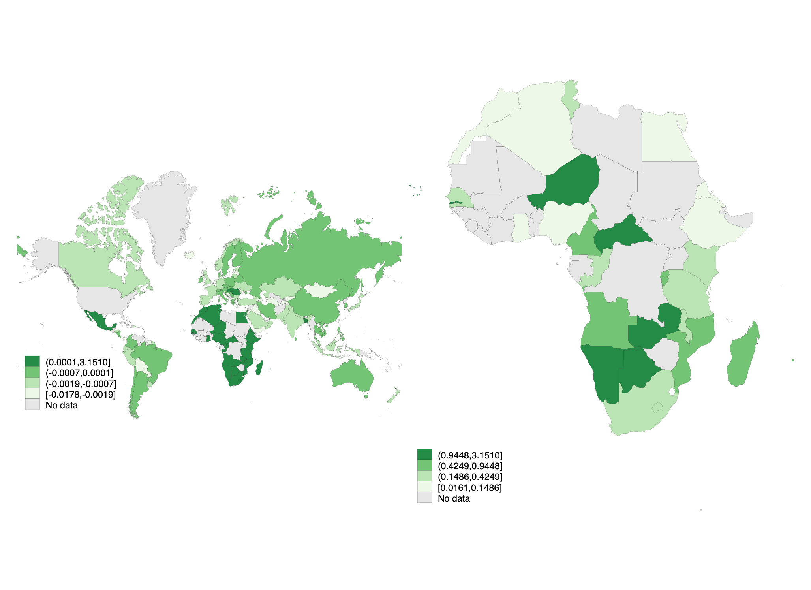

Current research projects
Abstract: This paper investigates the impact of investor-state dispute settlement (ISDS) mechanisms on firm-level foreign direct investment (FDI), focusing on their role in mitigating policy uncertainty and expropriation risk. Constructing a unique firm-level dataset covering FDI stocks across 130 countries from 2000 to 2021, we find that ISDS provisions included in trade agreements are associated with a 29% increase in parent firms’ investment in subsidiaries located in signatory countries. Notably, we show that ISDS has an even greater positive effect on investment during periods of high policy uncertainty, as indicated by election timing and country-risk indicators. These findings are robust to controlling for bilateral investment treaties, the depth of trade agreements, as well as other provisions. Consistent with the model predictions, we find that the influence of ISDS operates along both the extensive and intensive margins of investment. Finally, we find that the largest firms benefit the most from ISDS mechanisms, given their ability to absorb the costs of filing a potential claim.
LSEG Data extraction code example

Abstract: This paper examines the role of the African Continental Free Trade Agreement (AfCFTA), and the policies covered in the agreement, in the economic integration of African economies. First, the paper finds that the effect of PTAs on trade and welfare for Africa is lower relative to other regions, possibly due to the scope and content of their agreement. African PTAs are found to be of Medium/Low ambition, as classified in one of three categories with the PTA clustering algorithm used in this paper. The AfCFTA, which entered into force in 2019, offers the prospect of harmonizing existing regional integration under a single, comprehensive mega-regional trade agreement. As currently negotiated, the AfCFTA is classified as a Medium PTA, which raises the question as to whether deepening the agreement would further strengthen the integration of the African continent, and improve overall welfare and trade. We provide a General Equilibrium counterfactual analysis in which we show that if the AfCFTA were a deeper trade agreement (i.e., a switch from its current Medium to Deep trade agreement) substantial gains from trade would arise, with a 0.7% welfare gain on average. Finally, using feature attribution methodologies, the paper offers a novel way of investigating which policy areas would be involved in changing the classification of PTAs to Deep agreements, and applies the approach to the AfCFTA. A conclusion from this research is that trade disciplines and enforceability would be important features of a deeper AfCFTA.

Abstract: This paper investigates the effect of bilateral trade exposure on the signature of trade agreements and their depth. First, it classifies trade agreements into three different depth types, depending on the frequency of legally enforceable provisions they include: WTO+, agreements covering solely WTO disciplines; WTO-X (Core provisions), agreements going beyond WTO disciplines and covering Competition policy, Investment, IP rights, and Capital movement provisions; and WTO-X (Progressive), agreements covering areas beyond trade such as environment, labor markets, and visa regulation. Next, it explores how the decision to sign these agreements intertwines with trade exposure and perceived risk in the partner country. Results highlight that the more exposed a country is vis-à-vis a partner in terms of intermediary inputs (i.e., through both direct and indirect trade), the more likely it is to sign an agreement. Specifically, a 10% increase in the import exposure index increases the probability of signing a WTO-X (Core provisions), and a WTO-X (Progressive) and WTO+ agreement by 50%, 27%, and 1.4% respectively. The overall impact of exposure on PTA signing is magnified when the sourcing country is considered politically unstable or prone to military conflicts, especially for the WTO-X (Core provision) and WTO-X (Progressive) types.
Abstract: Firms facing higher import competition resort to adaptive strategies to maintain competitiveness. While previous literature focused on general labor effects and reallocation, little is known about self-employed workers. This paper aims to study import competition and outsourcing to solo self-employed. At the aggregate level (EU - NUTS) our preliminary findings reveal that regions facing intensified import competition from China exhibit higher self-employed workers relative to their total workforce, controlling for country, region, and industry characteristics. The next step is to disentangle whether firms are indeed replacing traditional employees with solo self-employed when facing financial hardship, using French administrative data.